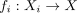
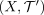
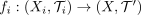
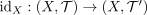
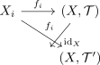
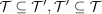
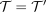

uniqueness of a final topology
1. Proposition
Let  be a set,
be a set,  be a class of topological spaces and
be a class of topological spaces and

be a class of set-theoretic maps Then the final topology is unique.2. Proof
Suppose  and
and

are final topologies Then, since
is continuous, we conclude that
is by universal property also continuous
Hence by reasons of symmetrie, we get

(see: Feinere Topologie und Identitätsabbildung) and hence